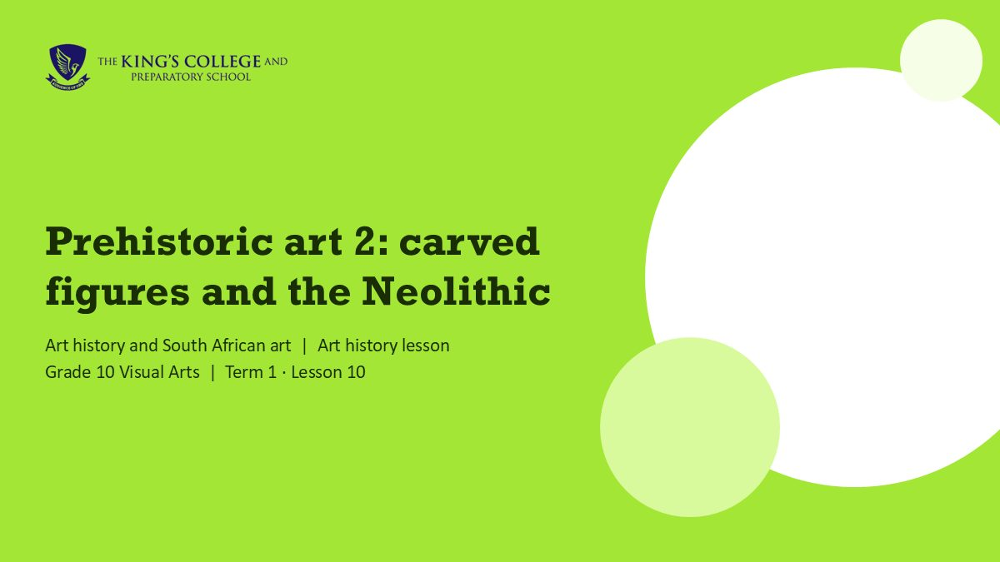

Term 1 · Lesson 10 · Art history lesson
Prehistoric art 2: carved figures and the Neolithic
Start here
Today I will
- Describe the Venus of Willendorf as a symbol rather than a portrait
- Explain how farming made Neolithic monuments possible
- Compare a carved figure with a stone monument
Think first
One object fits in your palm; the other took many generations to build. What could they possibly have in common?
Words to Know
| Word | Meaning |
|---|---|
| Portable art | Small art objects that can be carried, such as carved figures. |
| Venus figure | A small prehistoric carved figure of a woman, probably linked to ideas such as fertility. |
| Neolithic | The New Stone Age, when people began farming and settling in villages. |
| Megalith | A very large stone used in a monument. |
| Monument | A large structure built to mark a place, an event or a belief. |
| Post and lintel | Two upright stones (posts) carrying a horizontal stone (lintel) across the top. |
Slides

Videos
Notes
Portable art such as the Venus of Willendorf; the Neolithic shift to farming, settlement and stone monuments (Stonehenge).
Two key works
- Venus of Willendorf: c. 28 000–25 000 BCE, limestone with traces of red ochre, about 11 cm high; Natural History Museum, Vienna.
- A symbol, not a person: There is no face and the body is simplified and exaggerated, so it likely stands for an idea such as fertility or abundance.
- Stonehenge: Built in stages c. 3000–1500 BCE on Salisbury Plain, England, from sarsen stones and bluestones brought from Wales.
- Built for the sun: Post-and-lintel stones aligned with sunrise at the summer solstice: a place of ceremony linked to the seasons.
Why the Neolithic changed art
- Farming: People learnt to grow crops and keep animals.
- Settling: They stayed in one place and built villages.
- Organising: Settled groups could plan and share heavy labour over many years.
- Monuments: Huge stone structures became possible, linked to shared beliefs and the calendar.
Remember
Small enough to hold or big enough to walk through, prehistoric art served belief.
Practical
You need: History booklet, visual journal
Figure versus monument
- Rule a table in your VJ with three rows: material, scale, purpose.
- Fill in the Venus of Willendorf column with facts from the booklet.
- Fill in the Stonehenge column.
- Add a fourth row: one similarity between the two works.
- On your own, write a paragraph of 5 to 6 sentences comparing the two, using 'whereas' and 'both'.
Test yourself
- Why is the Venus of Willendorf called portable art?
- Explain how post-and-lintel construction works.
- Give one difference and one similarity between the Venus of Willendorf and Stonehenge.
Show answers
1. It is small enough to carry (about 11 cm high). 2. Two upright posts carry a horizontal lintel across the top. 3. Difference: tiny carved limestone figure versus huge stone monument (or individual versus community use). Similarity: both are linked to belief and survival.
Finished early?
Small or huge? A scale sketch
Show how different in scale the two key works are.
- Draw a straight line about 11 cm long in your VJ to show the height of the Venus of Willendorf.
- Trace around your hand beside it to compare its size with something you can hold.
- On the same page, sketch a post-and-lintel trilithon from Stonehenge with a tiny stick figure for scale.
- Write two sentences on how scale changes the way people used each work.